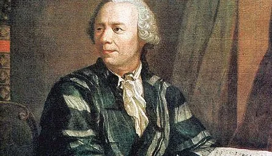

LEONHARD EULER
El matemático y físico suizo Leonhard Euler (1707-1783) hizo descubrimientos en una amplia gama de campos, incluyendo geometría, cálculo infinitesimal, trigonometría, álgebra, teoría de números, física de continuum, teoría lunar y teoría de grafos, para nombrar unos pocos.
Familia
Hijo de Marguerite Brucker y Paul Euler, clérigo. Tuvo dos hermanas pequeñas, Anna Maria y Maria Magdalena, y un hermano menor, Johann Heinrich.
Estudios
A los trece años se matriculó en la Universidad de Basilea y en 1723 recibió el título de maestro de Filosofía, con una disertación que comparaba las filosofías de Descartes y Newton. Siguiendo los deseos de su padre estudió teología, griego y hebreo. Recibió clases del matemático suizo Johann Bernoulli, quién descubrió su talento para las matemáticas. En 1726, con tan solo diecinueve años, se graduó Doctor
Matemático
En el año 1727, invitado por la emperatriz de Rusia Catalina I, fue miembro del profesorado de la Academia de Ciencias de San Petersburgo. Catedrático de Física en 1730 y de Matemáticas en 1733. En 1741 fue profesor de matemáticas en la Academia de Ciencias de Berlín a petición del rey de Prusia, Federico el Grande.
Aportaciones
En su Introducción al análisis de los infinitos (1748), realizó el primer tratamiento analítico completo del álgebra, la teoría de ecuaciones, la trigonometría y la geometría analítica.
Trató el desarrollo de series de funciones y formuló la regla por la que solo las series convergentes infinitas pueden ser evaluadas adecuadamente. También abordó las superficies tridimensionales y demostró que las secciones cónicas se representan mediante la ecuación general de segundo grado en dos dimensiones. Introdujo las funciones beta y gamma, y estudió algunas ecuaciones diferenciales.
Poseedor de una asombrosa facilidad para los números y el raro don de realizar mentalmente cálculos de largo alcance. Se recuerda que, en una ocasión, cuando dos de sus discípulos, al realizar la suma de unas series de diecisiete términos, no estaban de acuerdo con los resultados en una unidad de la quincuagésima cifra significativa, se recurrió a Euler. Este repasó el cálculo mentalmente, y su decisión resultó ser correcta.
Estableció los fundamentos de la mecánica analítica, especialmente en su Teoría de los movimientos de cuerpos rígidos (1765). Realizó también aportaciones a la astronomía, la óptica y la acústica. Entre sus obras más destacadas se encuentran Instituciones del cálculo diferencial (1755), Instituciones del cálculo integral (1768-1770) e Introducción al álgebra (1770)
Uno de los matemáticos más prolíficos de la historia. En su época de mayor producción, de 1727 a 1783) pudo completar hasta 800 páginas de artículos. Se calcula que sus obras completas podrían ocupar entre 60 y 80 volúmenes, aunque buena parte de su obra aún no se ha sido recopilada. La labor de recopilación y publicación de sus trabajos, Opera Omnia, comenzó en 1911 y hasta la fecha se han publicado 76 volúmenes.
francos suizos y en numerosos sellos postales suizos, alemanes y rusos.
Obras
Mechanica, sive motus scientia analytica exposita (1736)
Tentamen novae theoriae musicae (1739)
Solutio problematis ad geometriam situs pertinentis (1741)
Methodus inveniendi líneas curvas maximi minimive proprietate gaudentes, sive solutio problematis isoperimetrici latissimo sensu accepti (1744)
Introductio in Analysis Infinitorum (1748)
Institutiones Calculi Differentialis (1765)
Theoria motus corporum solidorum seu rigidorum (1765)
Institutiones Calculi Integralis (1768-1770)
Vollständige Anleitung zur Algebra42 (1770)
Lettres à une Princesse d'Allemagne (1768–1772)
Muerte
Perdió parcialmente la visión antes de cumplir 30 años y se quedó casi ciego al final de su vida. Regresó a San Petersburgo en 1766, donde murió el 18 de septiembre de 1783

LA ESTADISTICA
En la actualidad la Estadística se ha constituido en una herramienta importante en los procesos de investigación, puesto que permite planear la investigación, recolectar, organizar, representar, interpretar y analizar la información referente a individuos u observaciones de un fenómeno al cual se le estudian
La estadística estará presente en nuestras vidas y nos permitirá llegar a una información más precisa y clara sobre nuestros temas de interés
La incorporación de la estadística, ofrece herramientas metodológicas que permiten al estudiante desarrollar competencias para la recolección de datos, organización y tabulación de la información, comparación de fenómenos, análisis de variables, interpretación (construcción y lectura de tablas y gráficos)
Los conceptos estadísticos nos facilitan la solución de problemas en diversos contextos. En otras palabras, el sustento estadístico permite fortalecer los procesos de toma de decisiones adecuadas. Proceso de toma de decisiones estadísticas. lo tanto, permite que el problema sea resuelto con mayor eficacia y eficiencia.
Un tema que me gustaria investigar en la institución utilizando la estadistica es saber el porcentaje de estudiantes de nuestra institucion que han consumido sustancias de drogas y con eso no solo hacer la encuesta si no ayudarlos a salir de ese problema tan grande pero para eso necesitariamos un porcentaje de los mas de 1500 estudiantes que hay en el DEM